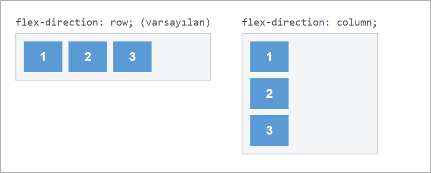
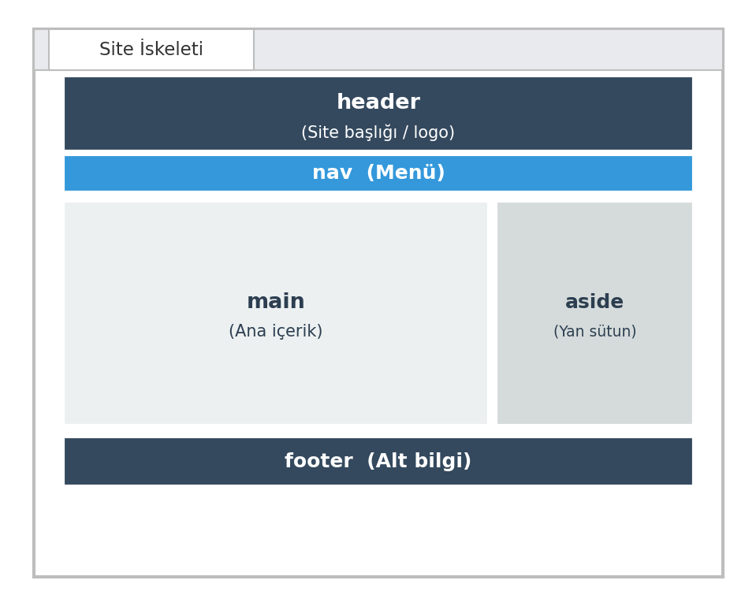
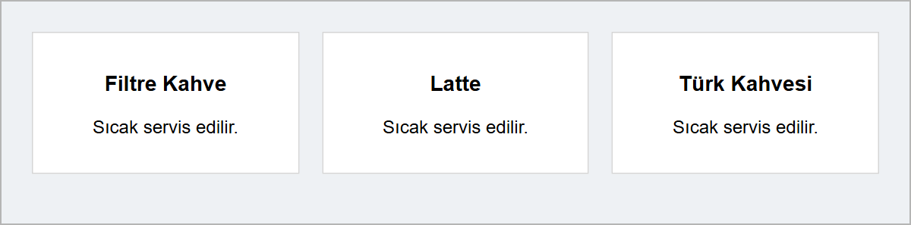

Flexbox 2 ve Sayfa Yerleşimi
Bu sayfada
9. haftada, Tasarımdan Koda konusunda sayfayı header, nav, main, section ve footer etiketleriyle bölgelere ayırdık; 10. haftada, Flexbox 1 konusunda da display: flex ile öğeleri yan yana dizdik. Bu hafta ikisini birleştiriyoruz.
Semantik iskelette bütün bölgeler alt alta dizilir. Gerçek sitelerde ise içerik çoğu zaman yan yana sütunlara ayrılır: solda ana içerik, sağda duyurular gibi. Kartlar da bir satıra sığmadığında alt satıra geçmelidir. Her iki düzen de Flexbox ile kurulur.
1Flexbox 2: flex-direction ve Esnek Sütunlar
1.1. flex-direction: Yön
10. haftada, Flexbox 1 konusunda, display: flex öğeleri yan yana (satır) dizmişti. Öğeleri alt alta (sütun) dizmek için flex-direction: column; kullanılır.

.kapsayici {
display: flex;
flex-direction: row; /* varsayılan: yan yana */
/* flex-direction: column; alt alta */
}
flex-direction: column verildiğinde eksenler yer değiştirir: justify-content artık öğeleri dikeyde, align-items ise yatayda hizalar.
1.2. flex: Sütun Oranı
Bir flex öğesine flex değeri vererek, o öğenin kalan alandan ne kadar pay alacağını belirlersiniz. Böylece sütunlu düzenler kurabilirsiniz.
main { flex: 2; } /* iki pay alır (daha geniş) */
aside { flex: 1; } /* bir pay alır (daha dar) */
Yukarıdaki örnekte main, kalan alandan aside'ın iki katı pay alır; bu yüzden yaklaşık iki kat geniş olur (iki kutunun eşit padding'i paya dahil olmadığı için tam iki kat değildir). flex: 1 verilen iki öğe ise eşit genişlikte olur.
2Örnek: Klasik Site İskeleti
Şimdi semantik etiketleri ve Flexbox'ı birleştirip klasik bir site düzeni kuralım: üstte header, altında nav, ortada yan yana main + aside, en altta footer.

Burada yeni bir semantik etiket kullanıyoruz: <aside>. Bu etiket, ana içeriğin yanında duran yan içeriği (duyurular, kenar çubuğu) işaretler.
<!DOCTYPE html>
<html lang="tr">
<head>
<meta charset="utf-8">
<title>Site İskeleti</title>
<style>
body { margin: 0; font-family: Arial, sans-serif; }
header {
background-color: #34495e;
color: white;
padding: 20px;
text-align: center;
}
nav {
display: flex;
gap: 20px;
background-color: #3498db;
padding: 12px;
}
nav a { color: white; text-decoration: none; }
.govde { display: flex; }
main {
flex: 2;
background-color: #ecf0f1;
padding: 20px;
}
aside {
flex: 1;
background-color: #d5dbdb;
padding: 20px;
}
footer {
background-color: #34495e;
color: white;
padding: 15px;
text-align: center;
}
</style>
</head>
<body>
<header>
<h1>Kahve Dünyası</h1>
</header>
<nav>
<a href="#">Ana Sayfa</a>
<a href="#">Hakkımda</a>
<a href="#">İletişim</a>
</nav>
<div class="govde">
<main>
<h2>Hoş Geldiniz</h2>
<p>Şehrin merkezinde sıcacık bir mola.</p>
</main>
<aside>
<h3>Duyurular</h3>
<p>Hafta içi %10 indirim.</p>
</aside>
</div>
<footer>
<p>© 2026 Kahve Dünyası</p>
</footer>
</body>
</html>
Burada .govde bir flex kapsayıcısıdır; main (flex: 2) ve aside (flex: 1) yan yana iki sütun oluşturur ve genişlikleri yaklaşık 2:1 oranındadır. main ile aside'ı saran kutu yalnızca düzen için var, anlamsal bir görevi yok; bu yüzden burada <div> kullandık. body'ye margin: 0 verdik ki header ve footer kenarlara tam otursun.
3flex-wrap: Alt Satıra Geçme
Flex kapsayıcısı, varsayılan olarak bütün öğeleri tek satırda tutar. Öğeler sığmadığında önce daralır; daha fazla daralamazlarsa yine de alt satıra geçmezler, sayfa yana taşar. Öğelerin sığmadığında alt satıra geçmesi için kapsayıcıya flex-wrap: wrap; verilir:
.galeri {
display: flex;
flex-wrap: wrap; /* sığmayan öğe alt satıra geçer */
gap: 20px; /* öğeler arası boşluk */
}
.kart {
flex: 1; /* kartlar satırı eşit paylaşır */
min-width: 200px; /* bir kart 200px'ten dar olmaz */
}
flex-wrap: wrapkapsayıcıya yazılır; sığmayan öğe bir alt satıra geçer.flex: 1kartların satırdaki alanı eşit paylaşmasını sağlar.min-width: 200pxbir kartın en az genişliğidir. Kartlar bu genişlikle yan yana sığmıyorsa sığmayan kart alt satıra geçer.gapkartların arasına boşluk koyar (10. haftada, Flexbox 1 konusunda navbarda kullandığımız özellikle aynı).
4Örnek: 3'lü Kart Galerisi
<!DOCTYPE html>
<html lang="tr">
<head>
<meta charset="utf-8">
<title>Kart Galerisi</title>
<style>
body { font-family: Arial, sans-serif; background-color: #eef1f4; }
.galeri {
display: flex;
flex-wrap: wrap;
gap: 20px;
padding: 20px;
}
.kart {
flex: 1;
min-width: 200px;
background-color: white;
border: 1px solid #d5d5d5;
padding: 15px;
text-align: center;
}
</style>
</head>
<body>
<div class="galeri">
<div class="kart">
<h3>Filtre Kahve</h3>
<p>Sıcak servis edilir.</p>
</div>
<div class="kart">
<h3>Latte</h3>
<p>Sıcak servis edilir.</p>
</div>
<div class="kart">
<h3>Türk Kahvesi</h3>
<p>Sıcak servis edilir.</p>
</div>
</div>
</body>
</html>
Tarayıcıdaki sonucu şöyledir:

Üç kart flex: 1 sayesinde eşit genişlikte yan yana dizildi; gap aralarında boşluk bıraktı. Bu genişlikte (800px) galeriye dördüncü bir kart eklerseniz dört kart bir satıra sığmaz: dördüncü kart alt satıra geçer ve flex: 1 yüzünden o satırın tamamını kaplar.
Aynı galeri CSS Grid adlı başka bir yerleşim yöntemiyle de yapılabilir. Bu derste yerleşim için Flexbox yeterlidir.
5Sıkça Yapılan 5 Hata
| Hata | Sonuç | Çözüm |
|---|---|---|
Flex sütunlarında sabit width verip esnekliği kaybetmek | Geniş ekranda sütunların yanında boş alan kalır | Oran için flex: 1, flex: 2 kullanın |
aside'ı flex kapsayıcısının (.govde) dışına yazmak | aside ana içeriğin yanına değil, altına düşer ve tam genişlikte olur | main ile aside'ı aynı flex kapsayıcısının içine yazın |
Galeride flex-wrap: wrap yazmamak | Kartlar sığmasa da tek satırda kalır; sayfa yana taşar | Kapsayıcıya flex-wrap: wrap verin |
gap'i kapsayıcıya değil kartlara yazmak | Kartların arasında boşluk oluşmaz | gap'i flex kapsayıcısına (.galeri) yazın |
flex-wrap'i kartlara yazmak | Kartlar alt satıra geçmez | flex-wrap da kapsayıcıya yazılır |
6Bu Haftanın Özeti
flex-directionflex öğelerinin yönünü belirler:row(yan yana, varsayılan) veyacolumn(alt alta).flex: 2/flex: 1gibi değerlerle sütun oranları kurulur; ikiflex: 1öğe eşit genişlikte olur.- Klasik site iskeleti header → nav → (main + aside) → footer biçimindedir;
mainveasidebir flex kapsayıcısında yan yana durur.<aside>yan içeriği işaretler. flex-wrap: wrapsığmayan öğeleri alt satıra geçirir; kart galerileri için gereklidir.display: flex,flex-wrapvegapkapsayıcıya;flexvemin-widthöğelere yazılır.
7Konu Sonu Testi
-
Ana içeriğin yanındaki yan içerik (duyurular, kenar çubuğu) için hangi etiket kullanılır?
- a)
<header> - b)
<aside> - c)
<main> - d)
<nav>
Cevabı göster
bYan içerik<aside>ile işaretlenir. - a)
-
Flex öğelerini alt alta dizmek için hangi kural yazılır?
- a)
flex-direction: row - b)
flex-direction: column - c)
justify-content: center - d)
display: block
Cevabı göster
bflex-direction: columnöğeleri alt alta dizer. - a)
-
main { flex: 2; }veaside { flex: 1; }isemainsütunuaside'a göre nasıl olur?- a) Yarısı kadar dar
- b) Eşit genişlikte
- c) Yaklaşık iki kat geniş
- d) Görünmez
Cevabı göster
cflex: 2,flex: 1'e göre kalan alandan iki kat pay alır. -
Bir satıra sığmayan kartların alt satıra geçmesi için kapsayıcıya hangi kural yazılır?
- a)
flex-direction: row - b)
flex-wrap: wrap - c)
gap: 20px - d)
text-align: center
Cevabı göster
bflex-wrap: wrapsığmayan öğeyi alt satıra geçirir. - a)
-
Flex öğeleri arasına boşluk koyan ve kapsayıcıya yazılan özellik hangisidir?
- a)
padding - b)
margin - c)
gap - d)
border
Cevabı göster
cÖğeler arası boşluğu kapsayıcıya yazılangapbelirler. - a)
8Kendinizi Deneyin
Cevabınızı önce kendiniz yazın (defterinize ya da VS Code'da bir dosyaya), sonra cevapla karşılaştırın. Kod okuma ve hata bulma sorularında cevabınızı tarayıcıda deneyerek de kontrol edebilirsiniz.
1. (Kavram) flex-wrap: wrap ne işe yarar? Yazılmazsa, yani varsayılan durumda, kapsayıcıya sığmayan kartlara ne olur?
Cevabı göster
flex-wrap: wrap, satıra sığmayan öğelerin alt satıra geçmesini sağlar. Varsayılan durumda (nowrap) öğeler hep tek satırda kalır; önce küçülürler, küçülemedikleri noktada kapsayıcının dışına taşarlar.
2. (Kavram) Aynı kapsayıcıdaki main öğesine flex: 2, aside öğesine flex: 1 verilirse genişlikler nasıl paylaşılır?
Cevabı göster
Genişlik 2'ye 1 oranında paylaşılır: main yaklaşık üçte iki, aside üçte bir yer kaplar. Yani main, aside'ın yaklaşık iki katı genişliktedir.
3. (Kod okuma) Aşağıdaki kapsayıcıda üç kart vardır. Kartlar nasıl dizilir? Bu durumda justify-content hangi yönde hizalama yapar?
.liste {
display: flex;
flex-direction: column;
}
Cevabı göster
Kartlar alt alta dizilir. flex-direction: column verildiğinde eksenler yer değiştirir: justify-content artık dikeyde, align-items yatayda hizalar.
4. (Hata bulma) main ile aside'ın yan yana, kartların da aralarında 20px boşlukla durması bekleniyor. İki hatayı bulun ve düzeltin.
<div class="govde">
<main>Asıl içerik</main>
</div>
<aside>Yan bölüm</aside>
<div class="galeri">
<div class="kart">1</div>
<div class="kart">2</div>
</div>
.govde { display: flex; }
main { flex: 2; }
aside { flex: 1; }
.galeri { display: flex; }
.kart { gap: 20px; }
Cevabı göster
aside,.govdekapsayıcısının dışında kalmış; flex yalnızca kapsayıcının doğrudan içindeki öğeleri yan yana dizer.asidede.govde'nin içine alınmalı.gapöğelere (.kart) değil kapsayıcıya (.galeri) yazılır:.galeri { display: flex; gap: 20px; }
5. (Kod yazma) Genişliği 200px olan kartları yan yana dizen, sığmayanları alt satıra geçiren ve kartlar arasında 20px boşluk bırakan galerinin CSS'ini yazın. Kapsayıcının class adı galeri, kartlarınki kart olsun.
Cevabı göster
.galeri {
display: flex;
flex-wrap: wrap;
gap: 20px;
}
.kart {
width: 200px;
}
9Uygulamalar
Görev: Flexbox ile iki sütunlu bir sayfa yapın: solda geniş bir ana içerik (main), sağda dar bir yan sütun (aside).
Çözüm:
<!DOCTYPE html>
<html lang="tr">
<head>
<meta charset="utf-8">
<title>İki Sütunlu Sayfa</title>
<style>
body { margin: 0; font-family: Arial, sans-serif; }
.govde { display: flex; }
main {
flex: 3;
background-color: #ffffff;
padding: 20px;
}
aside {
flex: 1;
background-color: #f4e1c1;
padding: 20px;
}
</style>
</head>
<body>
<div class="govde">
<main>
<h2>Blog Yazısı</h2>
<p>Bu bölüm sayfanın ana içeriğidir.</p>
</main>
<aside>
<h3>Kategoriler</h3>
<p>Haberler, Duyurular, İpuçları</p>
</aside>
</div>
</body>
</html>
Adımlar:
web_sitemklasöründe yeni bir.htmldosyası oluşturun.- Yukarıdaki kodu yazıp kaydedin (
Ctrl+S). - Tarayıcıda açın;
flex: 3veflex: 1oranını değiştirip kaydedin,F5ile yenileyerek sütun genişliklerinin nasıl değiştiğini gözlemleyin.
10Sınıf Uygulaması
Senaryo: Semantik etiketlerle klasik bir site iskeleti kurun ve altına 3'lü bir kart galerisi ekleyin.
Yapılacaklar:
web_sitemklasöründeiskelet.htmladında yeni bir dosya oluşturun.- Semantik etiketlerle yapıyı kurun:
<header>,<nav>, sonra bir.govdeiçinde<main>ve<aside>, en altta<footer>. .govde'yedisplay: flexverin;main'eflex: 2,aside'aflex: 1yazarak iki sütun oluşturun..govde'nin altına,<footer>'dan önce ayrı bir galeri bölümü ekleyin: bir<div class="galeri">içinde üç<div class="kart">..galeri'yedisplay: flex,flex-wrap: wrapvegapverin; kartlaraflex: 1ve birmin-widthyazın.
Beklenen sonuç: Üstte header ve nav, ortada iki sütunlu (main + aside) bir gövde, gövdenin altında yan yana üç karttan oluşan bir galeri, en altta footer.
İpuçları: display: flex, flex-wrap ve gap kapsayıcıya yazılır. flex: 2 / flex: 1 sütun oranını belirler.
11Notlar ve İpuçları
<main>bir sayfada yalnızca bir kez kullanılır.min-widthverilmezseflex: 1olan kartlar, içlerindeki yazı sığdığı sürece daralmaya devam eder; alt satıra ancak yazı artık sığmayınca geçer. Örneğin 800px genişlikte altı kart,min-widtholmadan tek satırda daracık dizilir. Kartların ne zaman alt satıra geçeceğinimin-widthile siz belirlersiniz.- Chrome'un geliştirici araçlarında,
display: flexverilmiş öğenin yanında flex rozeti görünür. Rozete tıklayınca öğelerin yerleşimi sayfanın üzerinde çizgilerle gösterilir.
12Çalışma Soruları
Soruları Sınıf Uygulamasında hazırladığınız iskelet.html sayfası üzerinde yapın.
mainveaside'ınflexoranlarını deneyin (2:1,3:1,1:1).flex-direction: columnkullanarak öğeleri alt alta dizin.- Galeriye dört, sonra altı kart ekleyip kartların alt satıra nasıl geçtiğini gözlemleyin.
- Galeriden
flex-wrap: wrapsatırını silip sayfayı daraltın; ne olduğunu gözlemleyin.
Kaynakça
- MDN: Flexbox (İngilizce)
- MDN: flex-wrap (İngilizce)
- MDN:
<aside>(İngilizce)
Bu haftanın Sınıf Uygulaması sayfanın sonundadır. Önce konu anlatımını okuyun, sonra uygulamayı kendi bilgisayarınızda yapın.